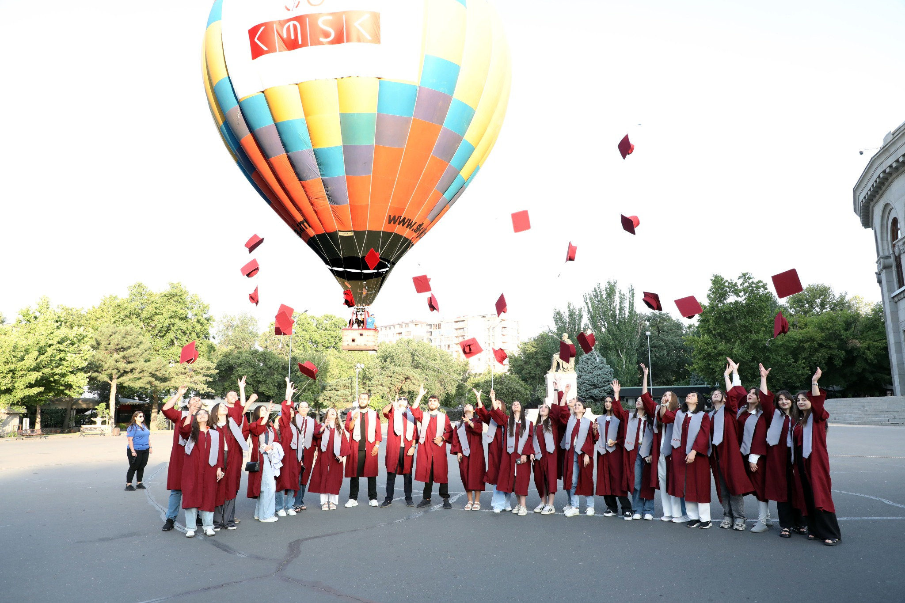
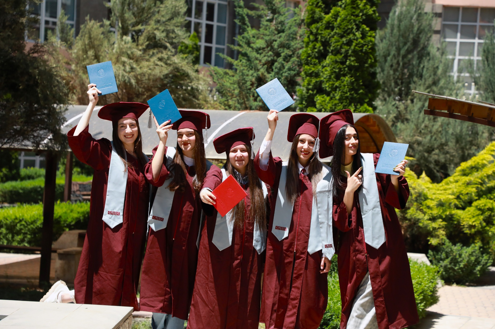

Որոնեք նորություններ, ծրագրեր, ֆակուլտետներ, ամբիոններ, դասախոսներ, փաստաթղթեր և միջոցառումներ։
Գիտաժողովներ, սեմինարներ, բաց դասախոսություններ, մշակութային և ուսումնական միջոցառումներ։
Բաց դասախոսություն · Գլխավոր մասնաշենք
Միջազգային · Դահլիճ 315
Գիտաժողով · Մեծ դահլիճ
Կարիերա · ՀՊՏՀ բակ

Գլխավոր մասնաշենք · 11:00

Գիտական կենտրոն · 15:30
ՀՊՏՀ · 19:00